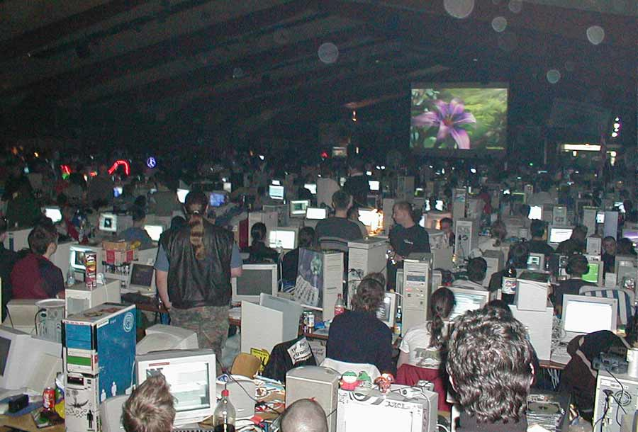

8K demo
Showcase ngi pointer work
- Rooms 2.0
- Meta feeds
- Queries in SSB-DB2
Rooms 2.0
- Written in Go
- Private modes: Open, Community, Restricted
- Aliases
https://github.com/ssb-ngi-pointer/rooms2
SSB ➡ Meta feeds
- 1 linear feed per user/device
- Hierarchy of feeds per device
Meta feeds
- Root meta feed
- Binary bendy butt feed format
- References other feeds (regular or meta feeds)
- Cross-signed
- Feed keys generated from seed (saved on main feed)
8K demo
- Meta feeds client running purely in the browser
- 1 app per feed
- Create apps as classic messages (8K limit)
- Uses a room server for connections
- Everything stored on clients

https://between-two-worlds.dk/8k/